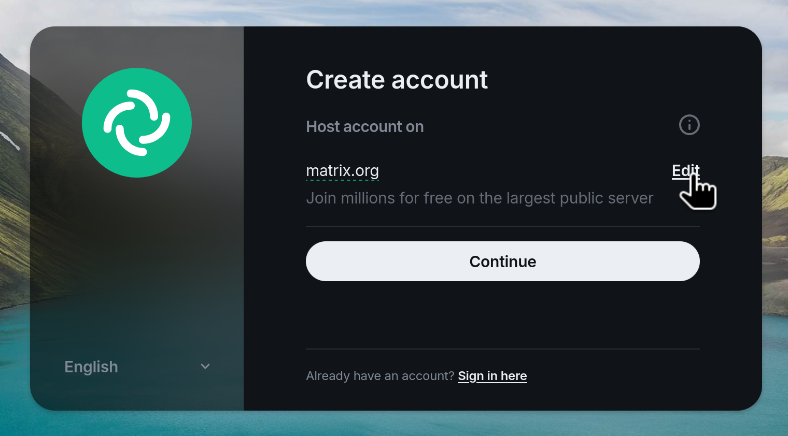
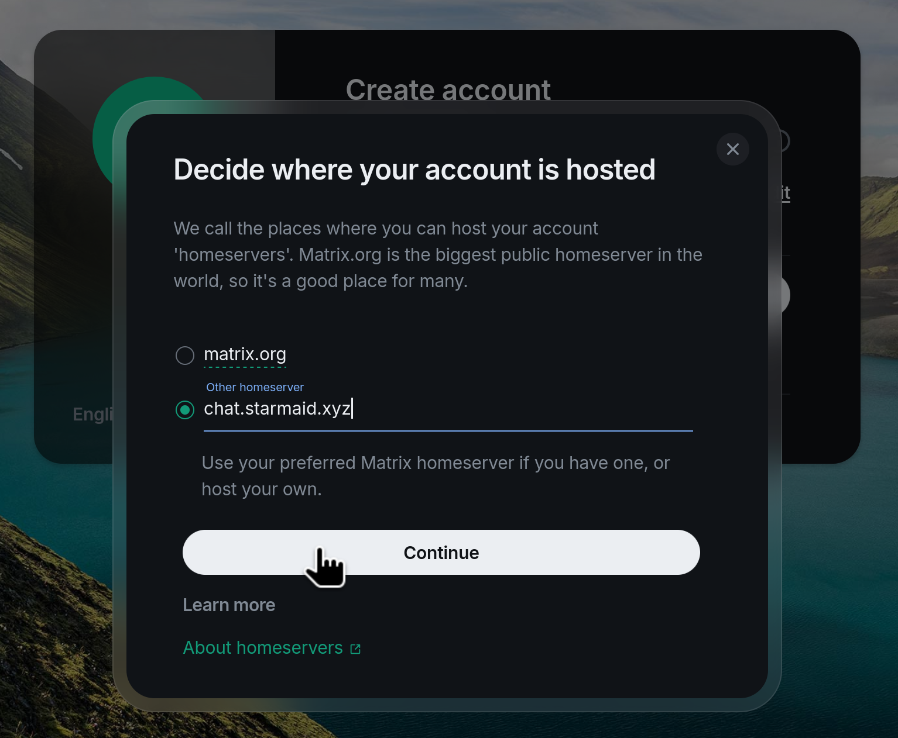
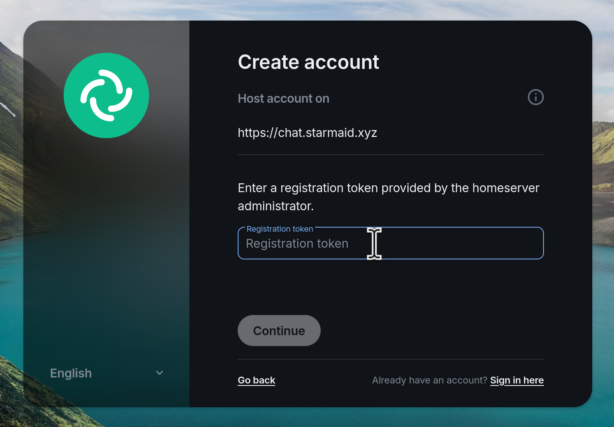

chat.starmaid.xyz
Welcome! You found the homepage for my matrix chat server. Likely you know me IRL or on the internet, and want to join a group chat that isn't on discord. Well you found the right place! Take a quick read here so you know what is going on.
How to start chatting:
- Pick a homeserver. This is the server that will host your account data and store your messages. I'm assuming you will be using this homeserver (chat.starmaid.xyz) but you can also pick one from this list.
- If using chat.starmaid.xyz, go to the Official Element Web Client to create your account.
- Enter the Registration Token. Message me and I will tell you. This prevents randos from creating accounts on this homeserver.
- Pick a client program. Element is great, so are some of the others.
- Send a message in the all-homeserver general chat! You should be auto-added after creating an account.



If you want more information on any of these topics, check out the Join Matrix Guide for an in-depth look at whats going on here.
Remember, this won't be Discord. Things are slightly different, there arent custom emojis. Things are a little rougher around the edges. I'm telling this to myself to remember to not get mad at the platform, and maybe we can help improve it.
Agreement
I will try to be a reasonable owner who maintains this server. Please be patient.
Likewise, be cool and try not to abuse the server or others. If I never have to add more terms to this, then that will be awesome.
About the setup
- I'm hosting this at my apartment on a desktop PC. Things that affect my apartment (internet/power outages, etc) will affect the server. I have a battery UPS, but I don't have two internet connections.
- I'm using Dynamic DNS from my ISP. This means sometimes Comcast will change the public IP of my apartment. My server will auto-update where starmaid.xyz points, But it may take a minute or so. This does not happen frequently - only once every several months. If I pay more, I could get a static IP 💭
- The server goes offline sometime between 4-5am PST on Mondays for maintenance/upgrades and stuff. Its usually only for a few minutes but could be longer.
- My backups are pretty manual right now. I'm working on improving it 💭, but theres always a non-zero chance I lose our chat data. IMO its better than using it for advertising or evil or whatever.
- I don't know what large voice call performance is like right now. We will test it, but may require some improvements in the future 💭
My Motivation
I'm doing this because I think its fun. I like setting up and configuring web services. I also like free open source software. I also like to do things for my friends. I actually tried this once before, about 6 years ago, and it was fun but not very performant. Since then, both matrix has improved (I'm using tuwunel instead of synapse) and people are losing patience with Discord.
What This Costs Me
These are all shared costs with everything else I do on my network, so its not like this is all-encompassing "WHAT I PAY FOR CHAT". But it gives an order of magnitude.
- Domain (starmaid.xyz) costs $14/year
- Internet costs like $40 a month1
Thanks xfinity.
- Electricity costs about $80 per year2
0.23 $/kWh × 40W × 0.001 kW/W × 24 h/day × 365 days/year ≈ $80/year
The Future
Realistically, if this server isn't enough and people want to pay for it, I can set this up on like a cloudflare server so it has better uptime and can scale to more users. We will make that call as we grow.